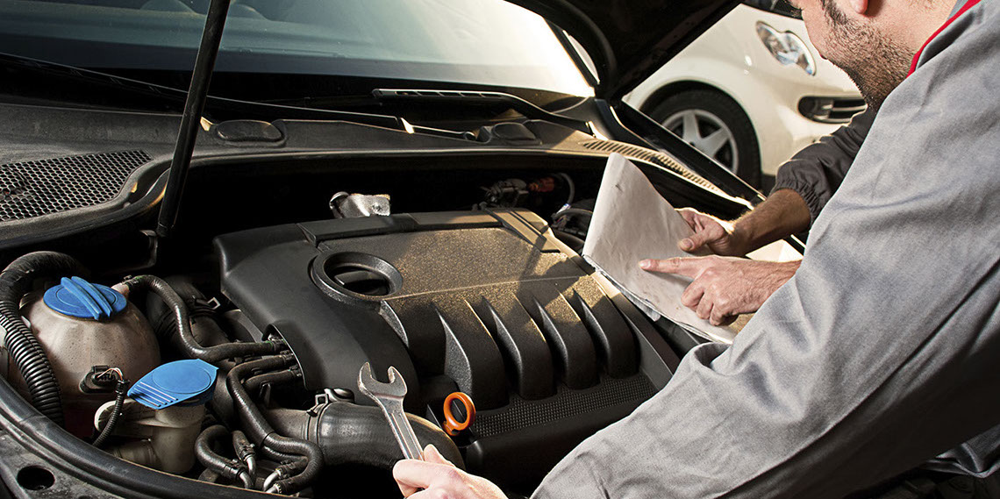
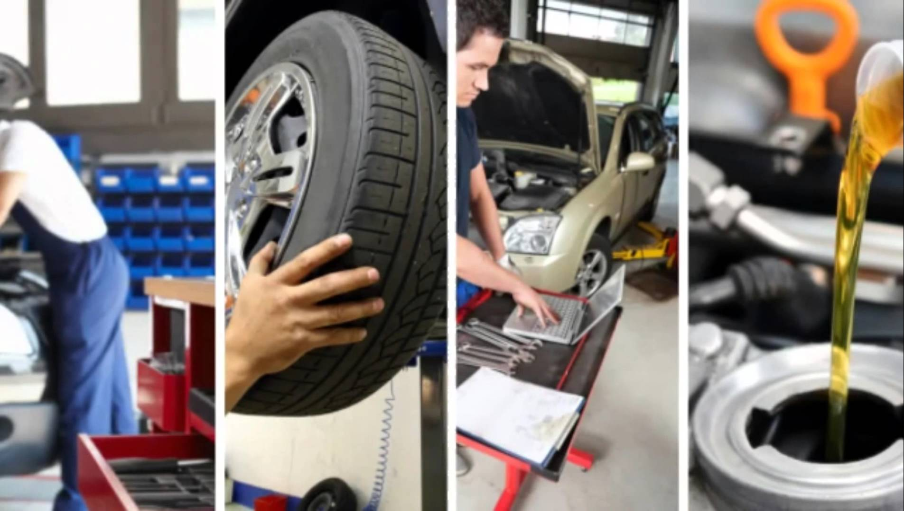
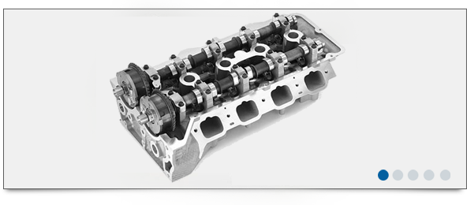

Начало
За сервиза
Авто услуги
Цилиндрови глави
Авточасти
Галерия
Контакти
тел:0876349255
Начало
За сервиза
Авто услуги
Цилиндрови глави
Авточасти
Галерия
Контакти
тел:0876349255

За нас
От създаването си фирма “Войнов ауто” ЕООД упражнява дейност по техническо обслужване и ремонти на леки, лекотоварни и товарни моторни превозни средства.
От самото си създаване, основните цели на фирмата ни са свързани с изграждането на модерна и добре екипирана локация, която в последствие да
създаде възможност за бърз, качествен и ценово ориентиран процес на обслужване на клиентите.
Усилията на екипа ни са фокусирани върху корпоративни и индивидуални клиентски програми, които да отговорят на новите пазарни условия и бизнес очаквания.
При нас работят отлични специалисти в авторемонтите операции, с техническо образование
и дългогодишен опит в областта. Работейки със срок на изпитване първоначално – те имат щанс да покажат и в последствие развият своя професионализъм.
За качеството гарантираме със строг контрол, който се упражнява от управителя на сервиза,
лично заинтересован от доброто изпълнение на операциите.
Гордеем се, че сме от малкото независими сервизи, предлагащ пълна гама дейности и затворен вътрешен цикъл на работа.
Снимки на сервиза можете да видите ТУК
Услуги в автосервиза

Услугите, които предоставя сервиза са разнообразни. Водещият принцип е клиентът да остане доволен от извършените ремонти по колата.
Ето и някои от най-масовите ремонти, които извършваме по автомобилите...[прочети повече]

Автосервиза разполага с отдел който се занимава с цялостно облужване на цилинтрови глави на леки, товарни, тешкотоварни, земеделски и други техники.
Ето и някои от най-масовите ремонти, които извършваме по цилинтровите глави:...[прочети повече]